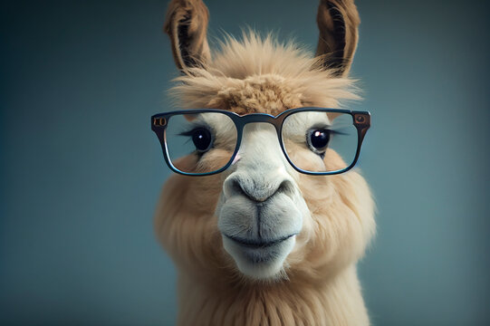

Llaaama's Resume

Summary
This is a summary of Llaaama's HTML. Welcome.
Llaaama is currently a noob at programming, but wishes very much to improve!
Education
Kindergarten for Llamas
Here, Llama went through kindergarten sliding down slides and swinging on swings.
High School for Llamas
Llama went straight from kindergarten to high school because of hard work and intelligence.
Postgrad School for Llaamas
Llaaama's talent is unsurpassed, breezing through high school to university and directly into postgrad.
Work Experience
2023-2025: Scientific Institute for Llamas
Llama works as an expert in Llamology at the institute, with major in Llama's fur and special interest in Llama's ears.
2020-2022: Non-profit for Llama Rights
Llama worked as an expert in Llama Rights to protect the rights of Llamas all over the world.
2018-2019: Special Internships for Bright Llamas
Llama served here as an intern to help the Special Research Team identify Llamas at risk of exploitation.
Skills
- Juggling on one leg: This is a proof that Llaaama isn't just all smarts, but is pretty agile too.
- Unicycling: This might seem silly but Llaaama really enjoys this, apart from being an efficient, sustainable way to commute.
- Reading: Llaaama's nerdy side at its best, but it's partly how Llaaama became so knowledgeable.
Other Achievements
- International Llamas Science Competition: Llaaama clinched #1 by beating 90,889 other Llamas worldwide in the fields of biology, chemistry and physics, with additional subjects in psychology and medicine. He walked away with a handcrafted alpaca woolen scarf.
- World Llamas Art Expo:Llaaama was awarded the 'Honorary Surreal Llama Realm' prize with the oil-painted work titled 'A Trillion Llamas in the Sun' - a testament that Llaaama is a genius in many aspects.
Llaaama's Hobbies Contact Llaaama